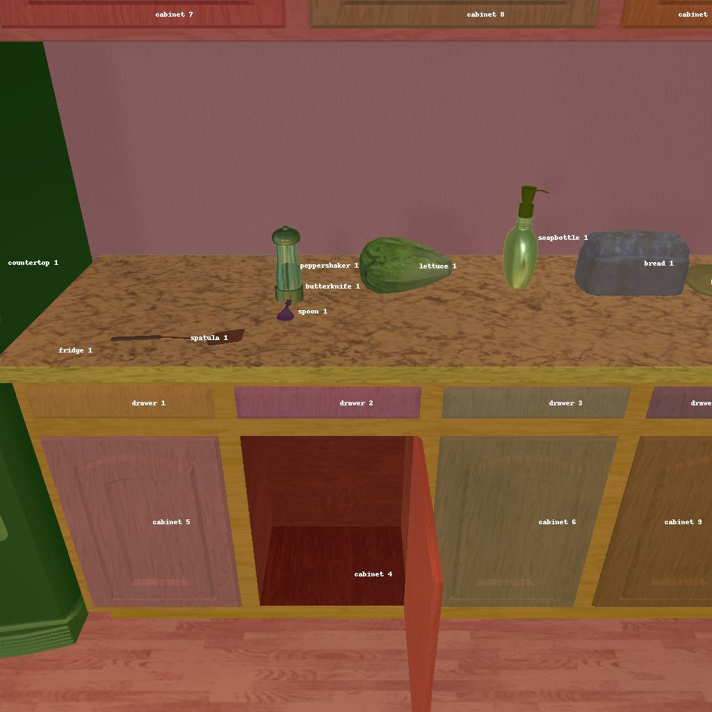

---------------------------------------------------------task: 23---------------------------------------------------------
--------------------------------------------------------------------------------------------------------------------------------------------------------------------
--------------------------------------------------------------------------------------------------------------------------------------------------------------------
Step:--------------------------------------------------------------------------12-------------------------------------------------------------------------------
----------------------------------------
VLM Prompt:
Image1:
Image2:
Image3:
**Instruction**
1. Analyze the provided image to identify all visible household objects, focusing on those relevant to the task description "heat some mug and put it in coffeemachine."
2. Use the analysis of the image and the task hint "The agent must find an object of the desired type, pick it up, go to a microwave, heat the object with the microwave, then find the correct location to place it, and put it down there. The agent does not need to use the microwave button or open the microwave to heat the object, and the agent just needs to do action that is "heat the object with the microwave"." to answer the question: what is the most reasonable action in the choices for the task description "heat some mug and put it in coffeemachine"?
4. Decide and write the answer using the template: The answer is: (i): , where i is the real number. If there is no desired object in the image, search every place based on **Initial Observation** to find the object. And if no one is exactly correct, choose a similar answer.
**Initial Observation**
You are in the middle of a room. Looking quickly around you, you can see cabinet (1-15), fridge (1), countertop (1-4), drawer (1-4), microwave (1), toaster (1), coffeemachine (1), garbagecan (1), sink (1), stoveburner (1-3), sinkbasin (1)
**Answer Choices**
(1): go to cabinet 2
(2): go to cabinet 3
(3): go to fridge 1
(4): go to countertop 1
(5): go to cabinet 4
(6): go to cabinet 6
(7): go to cabinet 7
(8): go to drawer 1
(9): go to drawer 2
(10): go to cabinet 8
(11): go to drawer 3
(12): go to cabinet 9
(13): go to cabinet 10
(14): go to drawer 4
(15): go to microwave 1
(16): go to cabinet 11
(17): go to toaster 1
(18): go to cabinet 12
(19): go to cabinet 13
(20): go to cabinet 14
(21): go to cabinet 15
(22): go to countertop 2
(23): go to coffeemachine 1
(24): go to garbagecan 1
(25): go to countertop 3
(26): go to countertop 4
(27): go to sink 1
(28): go to stoveburner 1
(29): go to stoveburner 2
(30): go to stoveburner 3
(31): go to sinkbasin 1
(32): open cabinet 5
(33): close cabinet 5
(34): examine cabinet 5
**Answer**
Let's think step by step by following the instructions.
----------------------------------------
----------------------------------------
Original Response:
The task is to "heat some mug and put it in coffeemachine." This means we need to find a mug, heat it, and then place it in the coffee machine. Looking at the provided images:
- Image 1 shows the countertop with various kitchen utensils and food items, but there is no mug visible.
- Image 2 shows the inside of cabinet 1, but there is only a plate visible, no mug.
- Image 3 is similar to Image 1 with an added bread item on the countertop, still no mug visible.
Based on the Initial Observation, there are several cabinets (1-15) that have not been checked yet. Since we are looking for a mug, it is most likely to be found inside a cabinet or on a countertop near the coffeemachine.
Checking the answer choices, the most reasonable action to find a mug would be to check inside the cabinets near the coffeemachine. Cabinet 5 is open and empty, so we can eliminate choices related to cabinet 5 (32, 33, 34). The coffeemachine is not visible in the images, but it is reasonable to assume that it might be near the other kitchen appliances.
The answer is: (7): go to cabinet 7. This is the closest cabinet that we have not seen inside yet and could potentially contain a mug. If the mug is not there, we would proceed to check the remaining cabinets (8-15), then countertops (2-4) if necessary, following the same process.
----------------------------------------
----------------------------------------
>>> Refine Original VLM Response and Get Pure Action: go to cabinet 7
----------------------------------------
-----------------------------------------------------------------
Running time: 39.187960147857666 seconds
Total Money: 14.952190000000005
-----------------------------------------------------------------
-----------------------------------------------------------------
Text Observation:You arrive at loc 8. The cabinet 7 is closed.
-----------------------------------------------------------------
UNSUCCEED